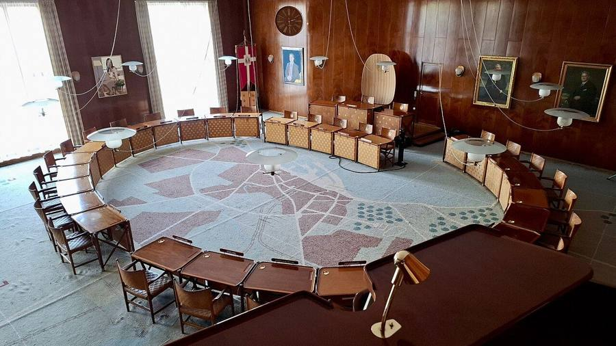

Flere hænder
En ledelsessimulator om ældreplejen i Aarhus Kommune
Sådan spiller I
Selvstudie, ca. 25 minutter. Spil alene eller 2 til 3 sammen.
Målet: I er ledelsen i Sundhed og Omsorg i Aarhus Kommune. I skal lægge en personaleplan, der giver ældreplejen flere hænder inden for budgettet, og få byrådet til at videreføre den et år senere.
- Læs opgaven og casen. Læs byrådets memo, Ældreloven og baggrunden fra Generationernes Hus på næste side. I lægger planen for byrådets flertal, ikke jeres egen.
- Læg planen. Vælg personaletiltag inden for puljen på 20 mio. kr. Målet er at skabe 40 flere årsværk i plejen. Brug dashboardet som forvaltningens erfaringsviden, men husk, at tallene ikke nødvendigvis viser, hvad der faktisk vil ske.
- Lås planen. Når I har valgt jeres tiltag, låser I planen. Herefter kan den ikke ændres.
- Mød reaktionen. Læs reaktionen på jeres plan i form af et nyhedsindslag, et brev eller et opslag. Vælg, hvordan I vil reagere, og lås herefter jeres svar.
- Se året efter. Se, hvad planen faktisk har ført til året efter: hvor mange årsværk der er kommet til, hvordan medarbejdernes motivation har udviklet sig, og hvordan de oplever ledelsen.
- Få planen gennem budget 2028. Skriv en kort besked til hver af de tre aktører, og giv eventuelt en indrømmelse. Beskederne tæller og kan samlet flytte op til 11 af de 31 stemmer. Planen fortsætter, hvis den samler mindst 16 stemmer.
- Se resultatet. Se resultatet af afstemningen, og gem eventuelt et screenshot af kvitteringen. Når afstemningen er låst, åbner fanen Forskningen, hvor I kan se, hvad studierne siger om de enkelte tiltag.
I kan ikke gå tilbage og ændre et trin, når det er låst. Lyd slås til og fra med knappen øverst til højre.
Opgaven og baggrunden
Her er memoet fra byrådets flertal, den lov, planen skal leve op til, og baggrunden fra Generationernes Hus.
Fiktivt memo
- Til
- Ledelsen i Sundhed og Omsorg, Aarhus Kommune
- Fra
- Byrådets flertal
- Vedr.
- Personaleplan for ældreplejen 2027
Byrådet vil se flere hænder i ældreplejen og et budget, der holder. Der er afsat en pulje på til personaletiltag. Målet er flere årsværk i plejen inden for et år.
Lønnen til de ledige stillinger er allerede budgetteret. Puljen dækker selve tiltagene, også ekstra løn til flere timer, og byrådet modtager ikke en plan, der ikke er finansieret. Rækker puljen ikke, kan I kun skaffe flere penge ved at omprioritere inden for Sundhed og Omsorg: under Finansiering kan I skære i rengøringen eller udskyde vedligehold på plejehjemmene. Andre magistratsafdelinger er ikke en del af forhandlingen.
Overenskomsten ligger fast. I har kun lokale redskaber. Planen træder i kraft 1. januar 2027. Efter et år tager byrådet stilling til, om den skal videreføres i budget 2028, og det sker på baggrund af, hvad planen faktisk har givet.
Tallene på jeres dashboard er forvaltningens erfaringsviden: de tommelfingerregler, man bruger i huset. Om de holder, finder I ud af.
Ældreloven, § 1, stk. 2 (gældende fra 1. juli 2025)
Med denne lov tilsigtes særlig at understøtte følgende:
- Den ældres selvbestemmelse.
- Tillid til medarbejderne og den borgernære ledelse.
- Et tæt samspil med pårørende, lokale fællesskaber og civilsamfund.
Kilde: Ældrelov, lov nr. 1651 af 30. december 2024, retsinformation.dk. Lovtekster er ikke omfattet af ophavsret (ophavsretslovens § 9).
Baggrund: Generationernes Hus
Plejehjemmet Generationernes Hus på Aarhus Ø åbnede i 2020 med 100 pladser og skulle være et af landets bedste. I januar 2025 fik det to påbud fra Styrelsen for Patientsikkerhed, efter bekymringshenvendelser fra pårørende og ansatte og anonyme tip fra medarbejdere.
Sundhed og Omsorgs egen årsagsanalyse fra juni 2025 fandt fem kerneårsager: at det var undervurderet, hvor svært det var at virkeliggøre visionen, åbningen under COVID-19, udfordrende fysiske rammer, organisatorisk uklarhed og ledelsesudskiftning på alle niveauer. Blandt de øvrige årsager nævner analysen høj personaleomsætning, højt sygefravær og mangelfuld læring af klager og bekymringshenvendelser.
Rådmand for Sundhed og Omsorg Christian Budde (V) undskyldte over for DR:
"Vi har ikke gjort det godt nok."
Formanden for byrådets sundheds- og omsorgsudvalg, Lone Hindø (S), kaldte over for DR sagen "noget af det mest alvorlige, jeg har set".
Kilder: Aarhus Kommune, Sundhed og Omsorg, Årsagsanalyse og læringsopsamling (juni 2025); DR Østjylland, 18. juni 2025, "Rådmand undskylder efter svigt på plejehjem".
Udgangspunktet
Spillet foregår i Aarhus Kommune, men memoet, planerne, reaktionerne, aktørerne og afstemningerne er fiktive. Kun casen om Generationernes Hus, citaterne fra DR, lovteksten og de kildebelagte tal er virkelige.
Læg planen
Vælg de tiltag, I vil have med. Dashboardet viser, hvad forvaltningens erfaringsviden forventer. Planen skal være finansieret; målet er årsværk.
Planen er vedtaget
Planen træder i kraft 1. januar 2027. I løbet af de første måneder begynder reaktionerne at komme. Når I går videre, kan planen ikke længere ændres.
De første måneder af 2027
Hvad gør I nu?
December 2027: det dashboardet ikke viste
Budgetforhandlingerne for 2028

Skal planen videreføres?
Byrådet stemmer om, hvorvidt planen skal fortsætte i 2028: 16 af 31 stemmer er nødvendige. Planens resultater efter det første år giver jer . Tre aktører kan flytte resten, og hver stiller et krav. I kan give én indrømmelse pr. aktør som en aftale for 2028, men aftalerne koster penge fra puljen, og planen skal stadig være finansieret.
Sådan tæller jeres beskeder
Jeres beskeder og indrømmelser kan flytte op til 11 af de 31 stemmer. Det er ofte forskellen på, om planen falder eller fortsætter.
- Beskeden skal være skrevet i hele sætninger (mindst 10 forskellige ord). Ellers tæller den slet ikke.
- Derefter får den point for hvert af de fire punkter i tjeklisten under feltet: aktørens bekymring, lokal dækning, en beskyttelse og afvejningen.
- Med en indrømmelse giver en besked, der rammer de fleste punkter, typisk de fleste af aktørens stemmer. Rammer den kun et eller to punkter, giver den færre.
- Uden indrømmelse giver selv en god besked sandsynligvis kun en mindre del af stemmerne.
- Den samme besked til flere aktører tæller mindre. Skriv til den enkelte.
Måleren ved hver aktør viser løbende, hvor mange stemmer aktøren sandsynligvis vil give.
Aktører, stemmetal og forhandlinger er fiktive.
Kvittering
Gem eventuelt et screenshot af boksen ovenfor. Det er jeres resultat.
Erfaringsviden og forskning
Jeres dashboard viste forvaltningens tommelfingerregler. Her er, hvad forskningen siger om hvert tiltag, og hvor den ikke siger noget.
Sådan læses mærkerne: Støtter betyder, at studiet støtter spillets antagelse om tiltaget, også når antagelsen er en skjult omkostning. Nuancerer betyder, at studiet peger samme vej med forbehold eller i en anden sammenhæng. Modsiger betyder, at studiet peger den anden vej.
Fire ting spillet gør synligt
- Dashboardet tæller det, der kan tælles. De redskaber, der så bedst ud i ledelsesinformationen, var ofte dem, der kostede motivation, og de billige "bløde" tiltag gav mere, end erfaringsviden lovede. I spillet er det bygget ind ud fra forskningen nedenfor; det er ikke et fund i sig selv, og størrelserne er stiliserede.
- Oplevelsen tæller mere end hensigten. Det er medarbejdernes oplevelse af ledelsen, ikke lederens hensigt, der hænger sammen med resultaterne (Jacobsen og Andersen 2015). Det samme gælder styringsredskaber: opleves de som kontrollerende, hænger det sammen med lavere motivation (Jacobsen, Hvitved og Andersen 2014; Mikkelsen m.fl. 2017).
- Crowding. Ydre styring, der opleves som kontrol, kan fortrænge den indre motivation, som omsorgsarbejdet bygger på; styring, der opleves som støtte, kan styrke den (Frey og Jegen 2001).
- Frontlinjen tilpasser sig. Medarbejdere håndterer knappe ressourcer og uklare mål, også dem ledelsen skaber: nogle rationerer, mange strækker sig for borgerne og bøjer reglerne (Lipsky 2010; Tummers m.fl. 2015). Ranglister med konsekvenser inviterer til gaming (Bevan og Hood 2006).
Til F8: Hvem skulle have haft en stemme i jeres plan, som ikke fik den? Og hvilke af jeres tiltag ville have fanget problemerne på Generationernes Hus, før tilsynet gjorde?
Kilder til udgangspunktet
Om spillet
Spillet Flere hænder er lavet til kurset Offentlig Forvaltning (BA, Statskundskab, Aarhus Universitet), efterår 2026, forelæsning 8 om de offentligt ansatte: motivation, ledelse og frontlinjeadfærd. Spillet er inspireret af John Holbeins klasseøvelse "The President's Budget": at lægge en plan i en andens navn, møde reaktionen dagen derpå og til sidst skulle samle et flertal. Tak til John Holbein for idéen og for at dele øvelsen åbent. Indhold og kode i Flere hænder er nye.
Spillet sender intet nogen steder hen. Holdnavnet og lydindstillingen huskes i jeres browser, og spillets tilstand gemmes i fanen, så en genindlæsning ikke sletter jeres plan. Grafen over sygefravær henter de nyeste tal direkte fra Danmarks Statistik, når den kan.
Aarhus Kommune er rammen, fordi casen er virkelig og lokal. Memoet, planerne, reaktionerne, nyhedsindslagene, aktørerne, udtalelserne og afstemningerne i spillet er fiktive og siger intet om, hvad kommunens politikere, ledere eller medarbejdere mener eller har gjort. Ø-NYT og Lokalavisen findes ikke.
Billeder
- Aarhus Rådhus. Leonhard Lenz, 2022. Wikimedia Commons, CC0 1.0.
- Aarhus Ø (Havneholmen), juni 2018. RhinoMind. Wikimedia Commons, CC BY-SA 4.0. Nedskaleret.
- Mødelokale, 2016. Breather via Unsplash, Wikimedia Commons, CC0. Beskåret.
- Byrådssalen, Aarhus Rådhus. Ciara Ní Riain. Wikimedia Commons, CC BY-SA 4.0. Nedskaleret.
- Plejecenter Sølund, København (arkivfoto, ikke Generationernes Hus). Leif Jørgensen. Wikimedia Commons, CC BY-SA 4.0. Nedskaleret.
- Tårnuret på Aarhus Rådhus, 2024. Flibust1er. Wikimedia Commons, CC0 1.0.
- Tegningerne i reaktionerne og grafen er lavet til spillet.
Lyd
- Nyhedsjingle: "Mini News Jingle", code_box, Freesound, CC0. Forkortet og komprimeret.
- Kontorlyd: "Office Ambience.wav", DiArchangeli, Freesound, CC0. Uddrag.
- Gang på plejecenter: "HOSPITAL - LONG CORRIDOR - ATMO / AMB (01)", tferrino, Freesound, CC0. Uddrag.
- Telefonsummen og urets tikken er lavet til spillet.
Portrætter af aktørerne
- Modelfotos fra Pexels under Pexels-licensen, beskåret: Liliana Drew (foto), José Antonio Otegui Auzmendi (foto), RDNE Stock project (foto). Personerne på billederne er modeller og har intet med spillet, Aarhus Kommune eller rollerne at gøre.
- Stemmen i nyhedsindslagene er syntetisk, lavet med Piper (MIT-licens) og stemmen da_DK "talesyntese", trænet på et CC0-datasæt fra Språkbanken. Den efterligner ingen virkelig person.
Data og tekst
- Sygefravær: Danmarks Statistik, FRA027. Venteliste til plejebolig: Danmarks Statistik, AED16. Begge CC BY 4.0 (kildeangivelse).
- Ældreloven § 1: lov nr. 1651 af 30. december 2024, retsinformation.dk.
Florian Keppeler, Institut for Statskundskab, Aarhus Universitet.